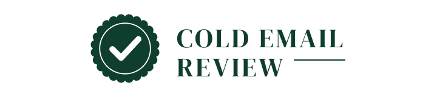

<!doctype html><meta charset="utf-8"><title>Logo samples 5–8</title><meta name="viewport" content="width=device-width,initial-scale=1">
<style>body{margin:0;padding:40px 16px 80px;background:#e9eaee;font:15px/1.4 system-ui,sans-serif;color:#111}section{max-width:900px;margin:0 auto 56px}h2{margin:0 0 14px;font-size:18px;font-weight:600}.pane{border-radius:14px;padding:28px 24px;margin-bottom:12px}.pane img.w{width:100%;height:auto;display:block}.row{display:flex;align-items:center;gap:22px;margin-top:22px;flex-wrap:wrap}.row img.i64{width:64px;height:64px}.row img.i32{width:32px;height:32px}.row img.i16{width:16px;height:16px}.row img.b{width:120px;height:120px;margin-left:auto}</style>
<section><h2>5. CE monogram: the C holds the E, serif name</h2>
<div class="pane" style="background:#ffffff"><div class="row"></div></div>
<div class="pane" style="background:#0f1420"><div class="row"></div></div></section>
<section><h2>6. Rosette seal: the mark is the award</h2>
<div class="pane" style="background:#f4efe4"><div class="row"></div></div>
<div class="pane" style="background:#101a16"><div class="row"></div></div></section>
<section><h2>7. Negative space: the flap becomes the tick and breaks the box</h2>
<div class="pane" style="background:#ffffff"><div class="row"></div></div>
<div class="pane" style="background:#0b1226"><div class="row"></div></div></section>
<section><h2>8. Bespoke letter: the v in Review is the tick</h2>
<div class="pane" style="background:#ffffff"><div class="row"></div></div>
<div class="pane" style="background:#111111"><div class="row"></div></div></section>
